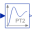
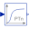

InitEnumeration defining initialization of a block |
Information
This information is part of the Modelica Standard Library maintained by the Modelica Association.
The following initialization alternatives are available:
NoInit- No initialization (start values are used as guess values with
fixed=false) SteadyState- Steady state initialization (derivatives of states are zero)
InitialState- Initialization with initial states
InitialOutput- Initialization with initial outputs (and steady state of the states if possible)
Enumeration Literals (4)
| NoInit |
No initialization (start values are used as guess values with fixed=false) |
|---|---|
| SteadyState |
Steady state initialization (derivatives of states are zero) |
| InitialState |
Initialization with initial states |
| InitialOutput |
Initialization with initial outputs (and steady state of the states if possible) |
Used in Examples (1)
|
Modelica.Blocks.Examples Demonstrates the Continuous.Filter block with various options |
Used in Components (13)
|
Modelica.Blocks.Continuous Output the integral of the input signal with optional reset |
|
|
Modelica.Blocks.Continuous Integrator with limited value of the output and optional reset |
|
|
Modelica.Blocks.Continuous Approximated derivative block |
|
|
Modelica.Blocks.Continuous First order transfer function block (= 1 pole) |
|
|  |
Modelica.Blocks.Continuous Second order transfer function block (= 2 poles) |
|
Modelica.Blocks.Continuous Proportional-Integral controller |
|
|
Modelica.Blocks.Continuous Linear transfer function |
|
|
Modelica.Blocks.Continuous Linear state space system |
|
|
Modelica.Blocks.Continuous Output the input signal filtered with a low pass Butterworth filter of any order |
|
|  |
Modelica.Blocks.Continuous Output the input signal filtered with an n-th order filter with critical damping |
|
Modelica.Blocks.Continuous Continuous low pass, high pass, band pass or band stop IIR-filter of type CriticalDamping, Bessel, Butterworth or ChebyshevI |
|
|
Modelica.Blocks.Nonlinear Limits the slew rate of a signal |
|
|
Modelica.Electrical.Machines.Examples.ControlledDCDrives.Utilities Limited PI-controller with anti-windup and feed-forward |